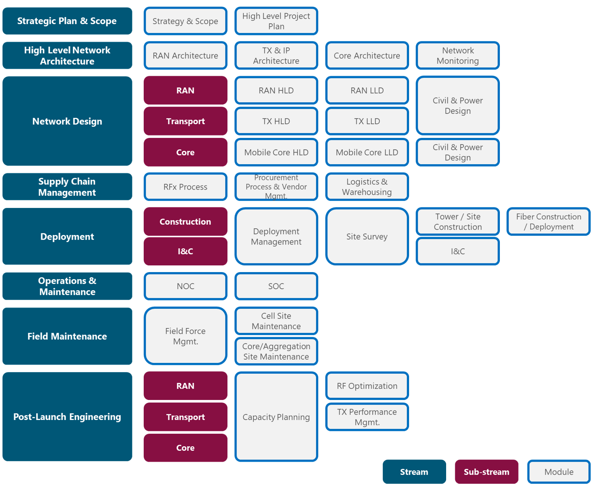
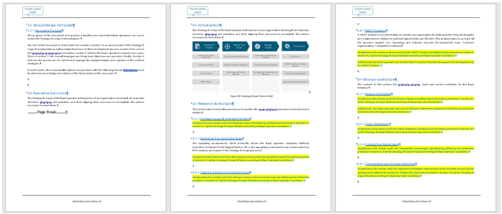
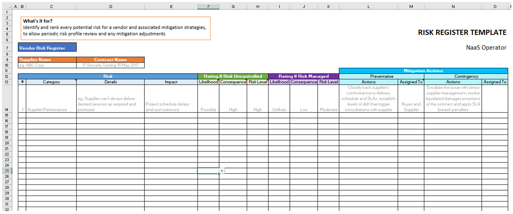
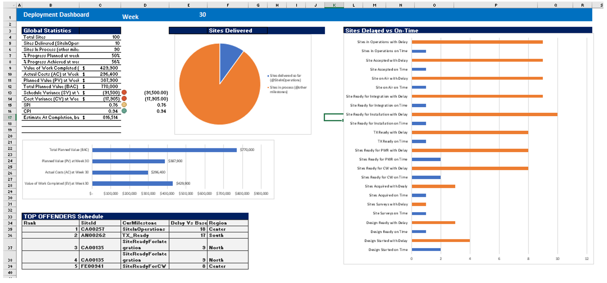
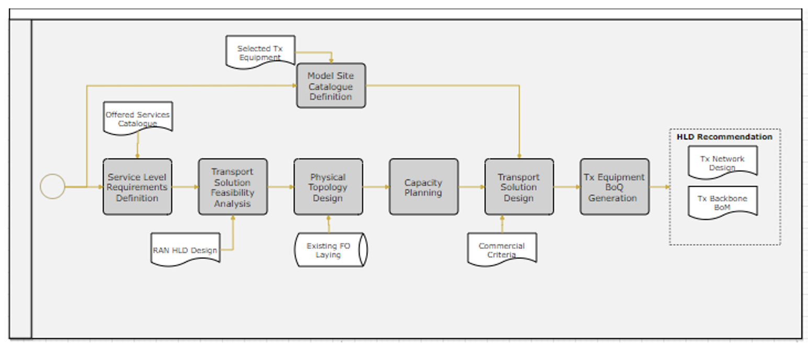
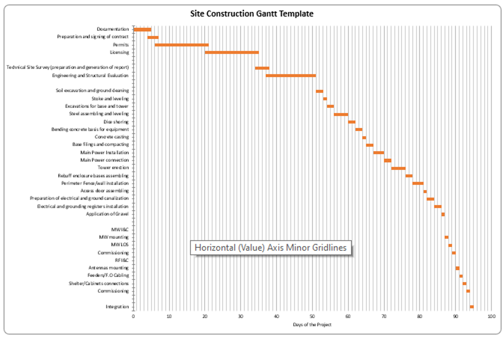

This section describes at a high-level the NaaS playbook structure and overall content. It guides the NaaS operator to identify the relevant modules based on their requirements and provides suggested paths to review and interact with the playbook.
The fundamental organization of the NaaS playbook is based on streams and modules. Streams address a specific stage or functional area within the NaaS initiative; and each stream comprises a set of modules related to the particular stage or area.
A module is an atomic unit built around specific objectives and select content to provide necessary background and instructions to the NaaS operator. The organization of the playbook into modules streamlines user navigation and provides a logic structure.
The NaaS playbook comprises 8 streams and 30 modules as depicted in Figure 3.

Figure 3 — NaaS playbook streams & modules
An at-a-glance description of each stream is provided below:
- Strategic Plan & Scope — This stream captures the NaaS operator's strategic plan and initiatives. The primary purpose of this stream is to facilitate the recording of strategic and foundational elements that are important to the entire organization.
- High Level Network Architecture — This stream drives network architecture considerations and decisions regarding different network segments: RAN, transport, mobile core and network monitoring. Motivated by the dictates of the strategic plan and service offerings, the network architecture will take shape and form.
- Network Design — This stream describes the network design process and best practices (high-level and low-level). Network design addresses three sub-streams: RAN, transport and core. In addition, the design of power systems and site layouts are included in this stream.
- Supply Chain Management — The supply chain management stream addresses the E2E functions performed to procure and deliver equipment and services for the NaaS operator. It covers vendor management, procurement process, and storage and transportation of the required equipment and services.
- Deployment — The deployment stream addresses all aspects for site turn-up; from site surveys to construction to installation & commissioning (I&C) to acceptance testing. This module splits into two sub-streams: construction and I&C to capture their fundamental differences and impacts across the associated organizations and functions.
- Operations & Maintenance — This stream covers all aspects of the centralized network operations center, and other operations teams required to operate a live network. It addresses several activities such as fault management, incident management, performance monitoring and other network operation center (NOC) procedures and tasks.
- Field Maintenance — This stream captures the processes and best practices for in-field preventive and corrective maintenance, as well as the necessary guidance to manage all field operations.
- Post-Launch Engineering — After Network deployment, continuous engineering is required to optimize performance and support network growth at the RAN, transport and core level.
Once that the streams are clear, Table 1 presents a summary of the content for each of the 30 modules divided by stream. It is important to note that all the content is oriented to provide guidelines and recommendations for the NaaS operator even if it is not explicitly mentioned.
|
Module
|
Content
|
|
Strategic Plan & Scope
|
|
Strategy & Scope
|
● Research and analysis to examine the NaaS operator environment and market
● Definition of target technologies and services
● Definition of organization-wide strategies and objectives
● Establishment of governance mechanisms
|
|
High Level Project Plan
|
Development of:
● Resource plan
● High-level schedule
● Communications plan
|
|
High Level Network Architecture
|
|
RAN Architecture
|
● Definition of the RAN architecture based on NaaS operator's requirements, capabilities, and business model
● Engineering guidelines for RAN design
● Requirements specification to evaluate and select RAN vendors at later stages
|
|
TX & IP Architecture
|
● Overview of architectural elements of the transport & IP network
● Definition of the transport & IP architecture based on NaaS operator's requirements, capabilities, and business model
● Requirements specification to evaluate and select transport & IP network vendors at later stages
|
|
Mobile Core Architecture
|
● Overview of architectural elements and options for the mobile core network
● Definition of the mobile core architecture based on NaaS operator's requirements, capabilities, and business model
● Overview and requirements of the telco cloud for a virtual evolved packet core (EPC)
● Requirements specification to evaluate and select mobile core vendors at later stages
|
|
Network Monitoring Architecture
|
● Definition of network monitoring strategy and data collection mechanisms
● Definition of network monitoring architecture and implementation strategy
● Requirements specification to evaluate and select network monitoring solutions at later stages
|
|
Network Design
|
|
RAN HLD
|
● Instructions to perform primary RAN high-level design (HLD) engineering tasks (e.g., coverage and capacity dimensioning, radiofrequency (RF) site configuration, site location)
● RAN HLD Process: generic process overview, guidelines for customization and example development.
● RAN HLD deliverable
|
|
Transport HLD
|
● Instructions to perform critical transport HLD engineering tasks (e.g., fiber optic path design, microwave line of sight verification, capacity dimensioning)
● Transport HLD Process: generic process overview, guidelines for customization and example development.
● Transport HLD deliverable
|
|
Mobile Core HLD
|
● Instructions to perform essential mobile core HLD engineering tasks (e.g., interconnection mechanisms selection, capacity and virtual network function dimensioning)
● Mobile Core HLD Process: generic process overview, guidelines for customization and example development.
● Mobile Core HLD deliverable
|
|
RAN LLD
|
● Instructions to perform primary RAN low-level design (LLD) engineering tasks (e.g., antenna azimuth and tilt definition, coverage plots, RF planning and parametrization)
● RAN LLD Process: generic process overview, guidelines for customization and example development.
● RAN LLD deliverable
|
|
Transport LLD
|
● Instructions to perform critical transport LLD engineering tasks (e.g., fiber and microwave link design, IP subnetting and address allocation)
● Transport LLD Process: generic process overview, guidelines for customization and example development.
● Transport LLD deliverable
|
|
Mobile Core LLD
|
● Instructions to perform essential mobile core LLD engineering tasks (e.g., IP address planning and allocation, routing & switching configuration, interconnection, network element and policy rules configuration)
● Mobile Core LLD Process: generic process overview, guidelines for customization and example development.
● Mobile Core LLD deliverable
|
|
Civil & Power Design for RAN Sites
|
● Dimensioning and selection of rectifiers, batteries and solar panels to power equipment at RAN sites
● Generation of required layouts for RAN sites (e.g., rack layout, cabling layout, antenna system layout and general site layout)
|
|
Civil & Power Design for Core Sites
|
● Dimensioning and selection of uninterrupted power supply (UPS) and power distribution units (PDU) based on core deployment scenario
● Generation of required layouts for core Sites (equipment room layout, rack layout and topology /cabling layout)
|
|
Supply Chain Management
|
|
RFx Process
|
● Request for Information/Proposal/Quotation (RFx) process overview and guidelines for implementation
● RFx document preparation
● Guidelines and tools for vendor evaluation and selection
|
|
Procurement Process & Vendor Mgmt.
|
● Procurement process overview and guidelines for implementation
● Methodologies and tools to execute purchasing transactional activities (e.g., purchase requests, purchase orders, product/service reception and acceptance, invoice verification)
● Systematic approach for vendor governance
|
|
Logistics & Warehousing
|
● Logistics & warehousing strategy definition based on inventory requirements over the different phases of the project lifecycle
● Logistics & warehousing implementation considerations (e.g., warehouse location and layout, transportation network design, third-party services considerations)
● Methodologies to control and manage the logistics & warehousing operations
|
|
Deployment
|
|
Deployment Management
|
● E2E deployment process overview
● Instruction to perform a comprehensive and efficient deployment plan
● Monitoring & control of the deployment process, from acquiring the site up to delivery to operations
|
|
Site Survey
|
● Identification of use cases and site survey strategy
● Instructions to perform relevant site survey activities (e.g., civil and telecom infrastructure survey, photographic evidence collection)
● Site survey report customization
|
|
Site Construction Management
|
● E2E site construction process overview
● Site construction components to be requested from construction vendors
● Guidelines for site construction RFx process
● Site construction project tracking and reporting
● Documentation, methodologies, and tools for site infrastructure acceptance
|
|
Fiber Construction Management
|
● E2E fiber construction process overview
● Fiber construction options, rights-of-way, and on-the-field fiber path surveys
● Guidelines for fiber construction RFx process
● Fiber construction project tracking and reporting
● Documentation, methodologies, and tools for fiber infrastructure acceptance
|
|
Installation & Commissioning
|
● Installation and commissioning process overview and guidelines for customization
● I&C strategy definition (e.g., insource vs outsource, high-skilled personnel vs low-tech model)
● Instructions to create methods of procedure (MoP), guidelines and checklists for installation, commissioning, integration and acceptance test activities
|
|
Operations & Maintenance
|
|
Network Operations Center (NOC)
|
Overview and implementation guidelines regarding:
● NOC functions
● NOC processes
● Systems and tools
● NOC implementation model, including dimensioning of the team and facility requirements.
|
|
Service Operations Center
(SOC)
|
Overview and implementation guidelines regarding:
● SOC Functions
● SOC Processes
● Systems and tools
● SOC implementation model, including dimensioning of the team and facility requirements.
|
|
Field Maintenance
|
|
Field Force Management
|
● Management aspects of field maintenance
● Field maintenance functions, processes, and software tools
● Field maintenance implementation model, including dimensioning of the team
|
|
Cell Site Maintenance
|
● Cell site maintenance process overview and guidelines for customization
● Preventive and corrective maintenance task description and best practices
● Guidance for maintenance manuals & reports
|
|
Core/Aggregation Site Maintenance
|
● Core site maintenance process overview and guidelines for customization
● Core site preventive and corrective maintenance task description and best practices
● Guidance for maintenance manuals and reports
|
|
Post-Launch Engineering
|
|
Capacity Planning
|
● Capacity planning concepts & process overview
● Methodologies to perform tasks associated with
● Capacity framework setup
● Capacity forecast
● Capacity augments plan
|
|
RAN Optimization
|
● RAN Optimization use cases
● Overview and selection of data sources for optimization
● Optimization principles and tools
|
|
Transport Performance Management
|
● Transport network performance issues
● Performance management & troubleshooting best practices
|
Table 1 — Module Content Description
Each module is complemented by methods to encourage engagement and ensure relevancy, enabling the use cases discussed in Section 3. Methods of engagement are intended to cause the user to apply the module content to develop, construct, or modify a plan, a design, a process or a best practice.
Types of methods of engagement included as part of the PlayBook are described below:
- Primer — A short instructional writing on content deemed critical to the micro-module.
- Template — A structured format in a variety of formats (e.g., DOCX, XLSX,) that serves as a starting point for task completion.
- Tool Catalogue — A list and short description of recognized applications and tools that is relevant or critical to a functional area.
- Widget — A small GUI based tool that performs a function or calculation.
Each NaaS operator is different, so it does their interaction and engagement with the playbook. This means that not all the modules in the playbook will be relevant to all NaaS operators. The Module Identification Wizard is provided for NaaS operators to identify the modules that will be relevant/valuable for their organization. If a more detailed analysis is desired, the NaaS operator can go through the process explained in this section.
At a high level, the first step is to identify the streams that are relevant to the organization. Simply put, this can be done in two ways: 1) based on the use cases and 2) based on the current status of the initiative.
The former considers the use cases discussed in Section 3. For the strategic planning use case, the streams that address all the related topics are Strategic Plan & Scope and High-Level Network Architecture.
For the second use case network implementation guide the relevant streams include High Level Network Architecture, Network Design, Supply Chain Management, and Deployment. These streams cover the required concepts, tasks and methodologies to design and implement the network plan from network architecture definition to site deployment and turn-up. In addition, under this use case, the remaining streams may be relevant if some guidance is required to establish processes for network operation.
For the task-specific support use case, all the streams can be relevant at a certain point in time, but this will depend on the NaaS Operator needs as their initiative evolves.
Regarding the other way to identify relevant streams, i.e., based on the current status of the initiative, it is straightforward just by looking at the structure of the PlayBook since the streams follow a logic based on the NaaS operator lifecycle. This allows for a simple mapping:
- Strategic Planning & Scope and High-Level Network Architecture is relevant for NaaS Operators in the strategic planning stage.
- Network Design stream is relevant before or during the HLD and LLD design process
- Supply Chain Management will be key for NaaS operators when selecting and evaluating vendors, issuing purchase orders and organizing logistics and warehousing tasks. In addition, this stream can be valuable at any other point to improve the procurement processes.
- Deployment stream is relevant during deployment planning, and at any point while sites are still being deployed; especially when engaging with third-party contractors.
- Operations & Maintenance, Field Maintenance and Post-Launch Engineering can be worthy of analysis either before deployment concludes or at any other point during the operations phase of the initiative.
After identifying the relevant streams, the NaaS operator can define the modules to be reviewed through a self-analysis, aiming to map their skills and knowledge against the module content in Table 1. The areas where the NaaS operator lacks expertise, personnel, processes and/or tools can be identified as part of one module, indicating that the module should be considered for further review.
Timing and sequencing are key to maximize the value of the playbook for NaaS operators. This means that the point in time and order in which the NaaS operator engages with the relevant playbook modules will impact on the benefits that can be obtained from them.
Two paths have been designed for NaaS operators interested in the strategic planning use case and the network implementation guide use case. The sequence, timeframe and stakeholders that should engage with each module for the strategic planning use case are presented in Table 2.
Table 2 — Suggested path for strategic planning
In a similar vein, Table 3 shows the same information for the Network Implementation Guide use case.
Table 3 — Suggested path for network implementation guide
it's important to note that NaaS operators may only address those modules that have been identified as relevant, based on section 4.2.
As stated in section 4.1, each playbook module is complemented with methods of engagement. From the available methods of engagement, templates play a key role since they will provide initial structure and a starting point for several tasks.
If the NaaS operator decides to adopt some of the templates, these will become assets of their organization that most of the time will be part of critical processes of the organization, either as a way of registration and documentation or as tools for calculation, comparison, monitoring and control.
Successful adoption of the templates implies tailoring and maintaining them throughout the initiative lifecycle. To achieve this, the following subsections guide the NaaS operator to customize the playbook templates for their initiative and provide recommendations for version control and access management.
Templates included with the NaaS playbook span across the topics addressed by all the modules. The format of each template will depend on the specific objective that it aims to accomplish. At a high level, the following types of templates can be identified:
- Documents & Reports — DOCX files with a predefined outline or structure and indications for the NaaS operator to fill the document. Some of them include generic content that can be further customized by the NaaS operator. Figure 4 shows an example, corresponding to the Strategy & Scope document.

Figure 4 — Strategy & Scope definition template
- Simple Spreadsheets — XLSX files that provide a format to register simple information related to a specific task or process. Figure 5 shows an example, corresponding to the risk register for vendors.

Figure 5 — Vendor Risk Register template
- Spreadsheets with Formulas — XLSX files that can be used for certain calculations or complex functions such as project tracking. These files are ready to use in the sense that the NaaS operator can start to fill data and the formulas will populate results. Further formula and format customization can be done. Figure 6 shows the deployment tracking sheet as an example.

Figure 6 — Deployment Tracking Template
- Process Flows — PPTX, Visio or XML files that detail a generic process that can be adapted by the NaaS operator to reflect their custom process. Visio and XML files can be edited using draw.io. Figure 7 shows the example of the transport HLD process.

Figure 7 — Transport HLD Process Flow Template
- Gantt Charts — XLSX or MS Project files showing generic Gantt charts for specific sub-projects such as deployment, fiber construction or site construction. Figure 8 shows the Gantt chart template for site construction as an example.

Figure 8 — Site Construction Gantt Template
The steps for customization will vary based on the type of template and the corresponding objective. However, generic guidelines for customization are provided below:
- Add the NaaS operator logo and name
- Apply formatting regarding color, font type, among others.
- Follow the instructions to fill the template and, if the template won't be used as a recurring format, delete those instructions.
- For templates that include text or content; read the content and preserve what is useful for the NaaS operator, then, delete or edit the rest.
- Avoid force-fitting Templates are not a one size fits all. Some templates might not be useful for some NaaS operators. Furthermore, parts of the content or the formats may not apply, depending on the scope and specific needs of each NaaS operator.
- Discuss with the key stakeholders Promote collaboration for template customization, mainly from the Management team and receive feedback from end users of the template. If possible, try to perform a dry-run of the processes using customized templates to identify potential changes and areas of opportunity.
As discussed in the previous section, the initial customization of templates ensures the usability and relevancy of the templates, facilitating tasks across the NaaS organization. Nevertheless, the NaaS operator must keep in mind that no project or organization is static. Thus, in order to maintain the value provided by templates, they will require updates to adapt them to the changes in the NaaS organization.
This requirement implies the need to perform version control since inconsistency in versions can create misinformation, incompatibility and lack of coordination that implies loss of time and money. Version control can be done in several ways, as long as the following principles are applied:
- Centralized versions and version control responsibility — Versions should be stored in a centralized location, preferably in the cloud; and there should be a single document owner for each template, responsible for version control.
- Align and inform about changes — Whenever a change is applied, direct and indirect users of the template must be informed, and the organization must align with the latest version.
- Follow a naming convention — When versioning, it is a best practice to follow a naming convention that provides insights regarding the level of change that has been applied between two versions.
In a similar way, access management is important to protect the assets of the NaaS organization. This includes the empty templates/formats, but also the actual documents that are a specific instance of the template and are used on an actual process. Through access management, the NaaS operator will maintain stable versions of shared documents/templates, prevent information loss or leaks, ensure accountability of actions regarding documents.
Recommendations to establish permissions for access management are provided below:
- Only the document owner must be able to edit or share the template with stakeholders.
- All stakeholders that make direct or indirect use of the templates or instances must be able to access the documents without delete or edit permissions.
Document management systems can be used for both version control and access management and should be considered by NaaS operators for implementation in their initiatives (see Tool Catalogue). In addition, small financially constrained NaaS Operators could use free versions of Drive, Dropbox or OneDrive to perform document management by sacrificing robustness, support and some integration, workflow and collaboration features. Further details can be found in section 5.3 of the High-Level Project Plan module.